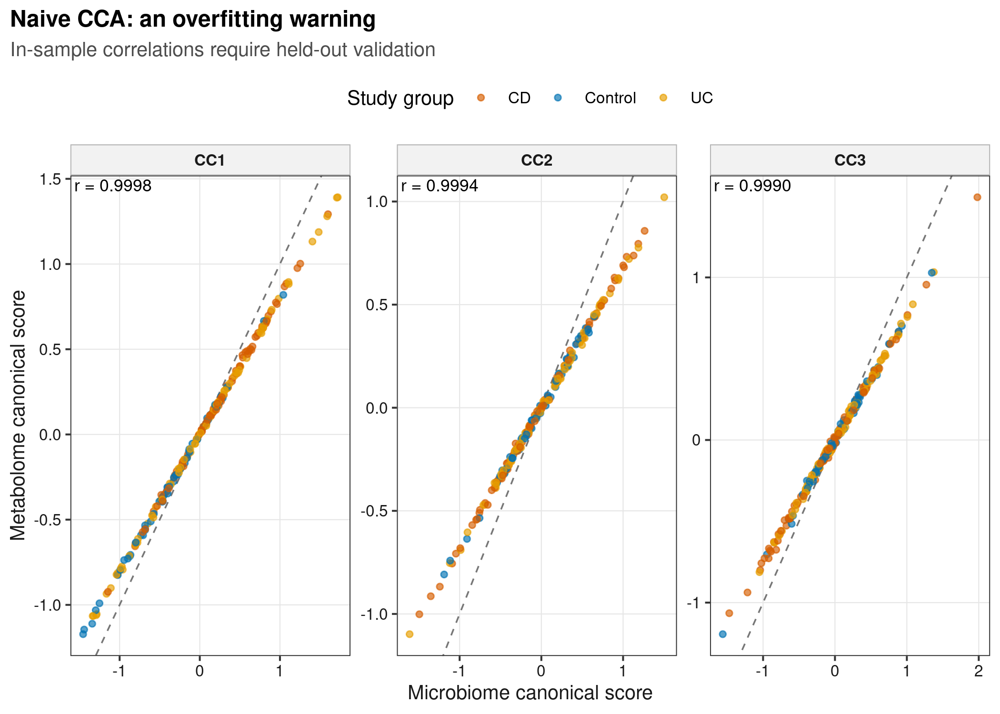
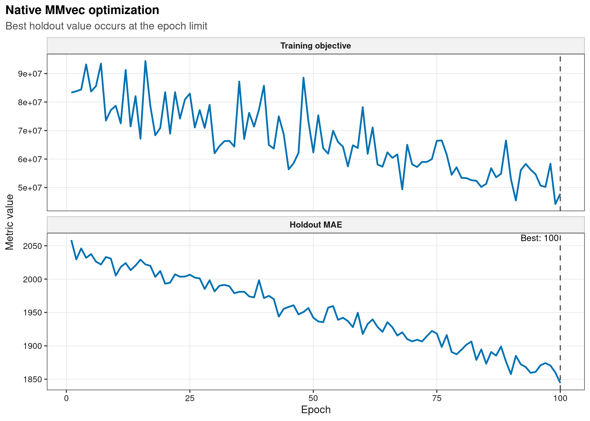
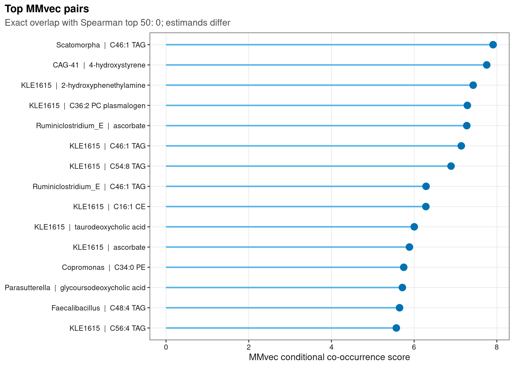
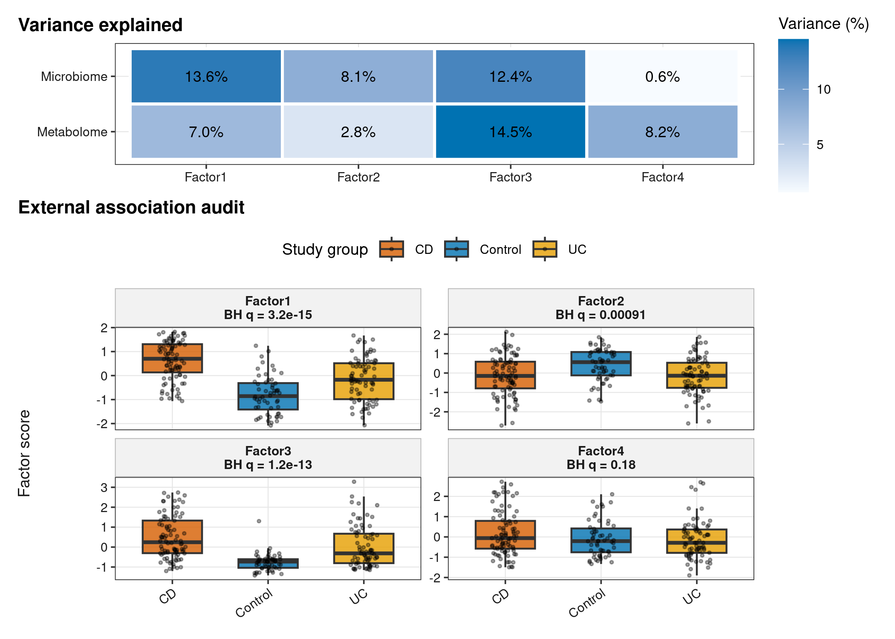

options(timeout = 600)
data_url <- "https://raw.githubusercontent.com/petemeng/microbiome-best-practices/3cb6a817e0c73ab7ecbec1cedc1ad80cbb9ecfaa/"
input_files <- c(
"scripts/run_article48_native_mmvec.py",
"scripts/run_article48_mmvec_mofa.py",
"env/mmvec-native.yml",
"env/multiomics.yml",
"data/small/paired-ibd-multiomics/metabolite-annotation.tsv",
"data/small/paired-ibd-multiomics/metabolites.tsv",
"data/small/paired-ibd-multiomics/metadata.tsv",
"data/small/paired-ibd-multiomics/otutab.tsv",
"data/small/paired-ibd-multiomics/source-summary.json",
"data/small/paired-ibd-multiomics/taxonomy.tsv"
)
for (path in input_files) {
dir.create(dirname(path), recursive = TRUE, showWarnings = FALSE)
if (!file.exists(path)) download.file(paste0(data_url, path), path, mode = "wb", quiet = TRUE)
}MMvec/MOFA（菌×代谢物）
联合潜变量模型比较的是共享结构
Morton et al. (2019)用 MMvec 展示 microbe–metabolite conditional probabilities 与 embeddings；Argelaguet et al. (2020)用 MOFA+ 展示多视图 factors、variance explained 和 loadings。
重要先给结论
naive CCA 的前三个 canonical correlations 都超过 0.999，但这里 \(p=220\) features、\(n=220\) samples，几乎完美的 training correlation 是高维过拟合警报。原生 MMvec 在固定的 153/67 train/holdout split 上运行 100 个 epochs，最低 holdout MAE 为 1844.29，且出现在最后一轮；这提示结果尚未形成内部最优点，不能冒充 early stopping。原生 MOFA2 最终保留 4 个 factors，解释 microbiome 34.8%、metabolome 32.6% 的总 variance，其中 3 个 factors 与 diagnosis group 通过 FDR。Spearman 与 MMvec top-50 pairs 的精确重叠为 0，说明它们不是同一个问题的可互换答案。
下载并读取本次分析的数据
需要 R，以及 ggplot2、jsonlite、patchwork、ragg、readr、svglite。本次使用配对的微生物组、代谢组、样本信息及代谢物注释表。
在一个新建的文件夹中运行以下代码，下载文件后按文中的顺序继续分析：
library(ggplot2)
library(patchwork)
set.seed(20260748)
font_pub <- "sans"
pal_pub <- c(
blue = "#0072B2", orange = "#E69F00", green = "#009E73",
vermillion = "#D55E00", purple = "#CC79A7", sky = "#56B4E9",
yellow = "#F0E442", grey = "#6B7280"
)
scale_color_pub <- function(..., values = unname(pal_pub)) {
ggplot2::scale_color_manual(..., values = values)
}
scale_fill_pub <- function(..., values = unname(pal_pub)) {
ggplot2::scale_fill_manual(..., values = values)
}
theme_pub <- function(base_size = 10, base_family = font_pub) {
ggplot2::theme_bw(base_size = base_size, base_family = base_family) +
ggplot2::theme(
panel.grid.minor = ggplot2::element_blank(),
panel.grid.major = ggplot2::element_line(colour = "#E6E6E6", linewidth = 0.25),
axis.text = ggplot2::element_text(colour = "#1A1A1A"),
axis.title = ggplot2::element_text(colour = "#1A1A1A"),
plot.title.position = "plot",
plot.title = ggplot2::element_text(face = "bold", size = ggplot2::rel(1.15)),
plot.subtitle = ggplot2::element_text(colour = "#4D4D4D"),
plot.caption = ggplot2::element_text(colour = "#666666", hjust = 0),
strip.background = ggplot2::element_rect(fill = "#F2F2F2", colour = "#B3B3B3"),
strip.text = ggplot2::element_text(face = "bold"),
legend.key = ggplot2::element_blank(), legend.position = "top"
)
}
save_pub <- function(plot, file_base, width = 89, height = 70, units = "mm", dpi = 600) {
dir.create(dirname(file_base), recursive = TRUE, showWarnings = FALSE)
ggplot2::ggsave(paste0(file_base, ".pdf"), plot, width = width, height = height,
units = units, device = grDevices::cairo_pdf, family = font_pub, bg = "white")
ggplot2::ggsave(paste0(file_base, ".svg"), plot, width = width, height = height,
units = units, device = svglite::svglite, bg = "white")
ggplot2::ggsave(paste0(file_base, ".png"), plot, width = width, height = height,
units = units, dpi = dpi, device = ragg::agg_png, bg = "white")
ggplot2::ggsave(paste0(file_base, ".tiff"), plot, width = width, height = height,
units = units, dpi = dpi, device = ragg::agg_tiff,
compression = "lzw", bg = "white")
invisible(plot)
}读取三件套与配对 metabolite matrix
read_keyed_tsv <- function(path) {
x <- readr::read_tsv(path, show_col_types = FALSE, progress = FALSE,
name_repair = "minimal", na = character())
ids <- as.character(x[[1L]])
stopifnot(!anyDuplicated(ids))
out <- as.data.frame(x[-1L], check.names = FALSE)
rownames(out) <- ids
out
}
data_dir <- "data/small/paired-ibd-multiomics"
otutab_raw <- read_keyed_tsv(file.path(data_dir, "otutab.tsv"))
taxonomy <- read_keyed_tsv(file.path(data_dir, "taxonomy.tsv"))
metadata <- read_keyed_tsv(file.path(data_dir, "metadata.tsv"))
metabolites_raw <- read_keyed_tsv(file.path(data_dir, "metabolites.tsv"))
metabolite_annotation <- read_keyed_tsv(
file.path(data_dir, "metabolite-annotation.tsv")
)
otutab <- as.matrix(data.frame(lapply(otutab_raw, as.numeric), check.names = FALSE))
metabolites <- as.matrix(data.frame(
lapply(metabolites_raw, as.numeric), check.names = FALSE
))
rownames(otutab) <- rownames(otutab_raw)
rownames(metabolites) <- rownames(metabolites_raw)
stopifnot(
nrow(otutab) == 250L, ncol(otutab) == 220L,
nrow(metabolites) == 277L, ncol(metabolites) == 220L,
identical(colnames(otutab), rownames(metadata)),
identical(colnames(metabolites), rownames(metadata)),
all(otutab >= 0), all(metabolites >= 0)
)
head(otutab[, 1:5])
head(taxonomy)
head(metadata)
head(metabolites[, 1:5]) PRISM.7122 PRISM.7147 PRISM.7150 PRISM.7153 PRISM.7184
MB_G001 453719 10530766 11892271 7512181 1046534
MB_G002 869654 6592783 3427735 922276 3202362
MB_G003 10991530 8375177 6081649 38477 513707
MB_G004 23786 8482569 411525 2994933 25506
MB_G005 20363 4186641 1152397 24974 1631929
MB_G006 42243 1231904 12103817 959 536343
Kingdom Phylum Class Order Family
MB_G001 Bacteria Bacteroidota Bacteroidia Bacteroidales Bacteroidaceae
MB_G002 Bacteria Firmicutes_A Clostridia Lachnospirales Lachnospiraceae
MB_G003 Bacteria Bacteroidota Bacteroidia Bacteroidales Bacteroidaceae
MB_G004 Bacteria Firmicutes_A Clostridia Lachnospirales Lachnospiraceae
MB_G005 Bacteria Firmicutes_A Clostridia Oscillospirales Ruminococcaceae
MB_G006 Bacteria Bacteroidota Bacteroidia Bacteroidales Rikenellaceae
Genus Species
MB_G001 Bacteroides NA
MB_G002 Blautia_A NA
MB_G003 Phocaeicola NA
MB_G004 Agathobacter NA
MB_G005 Faecalibacterium NA
MB_G006 Alistipes NA
Lineage
MB_G001 d__Bacteria;p__Bacteroidota;c__Bacteroidia;o__Bacteroidales;f__Bacteroidaceae;g__Bacteroides
MB_G002 d__Bacteria;p__Firmicutes_A;c__Clostridia;o__Lachnospirales;f__Lachnospiraceae;g__Blautia_A
MB_G003 d__Bacteria;p__Bacteroidota;c__Bacteroidia;o__Bacteroidales;f__Bacteroidaceae;g__Phocaeicola
MB_G004 d__Bacteria;p__Firmicutes_A;c__Clostridia;o__Lachnospirales;f__Lachnospiraceae;g__Agathobacter
MB_G005 d__Bacteria;p__Firmicutes_A;c__Clostridia;o__Oscillospirales;f__Ruminococcaceae;g__Faecalibacterium
MB_G006 d__Bacteria;p__Bacteroidota;c__Bacteroidia;o__Bacteroidales;f__Rikenellaceae;g__Alistipes
DisplayName
MB_G001 Bacteroides
MB_G002 Blautia_A
MB_G003 Phocaeicola
MB_G004 Agathobacter
MB_G005 Faecalibacterium
MB_G006 Alistipes
Dataset Subject StudyGroup Age Age.Units
PRISM.7122 FRANZOSA_IBD_2019 PRISM.7122 CD 38 Years
PRISM.7147 FRANZOSA_IBD_2019 PRISM.7147 CD 50 Years
PRISM.7150 FRANZOSA_IBD_2019 PRISM.7150 CD 41 Years
PRISM.7153 FRANZOSA_IBD_2019 PRISM.7153 CD 51 Years
PRISM.7184 FRANZOSA_IBD_2019 PRISM.7184 CD 68 Years
PRISM.7238 FRANZOSA_IBD_2019 PRISM.7238 CD 67 Years
DOI
PRISM.7122 10.1038/s41564-018-0306-4
PRISM.7147 10.1038/s41564-018-0306-4
PRISM.7150 10.1038/s41564-018-0306-4
PRISM.7153 10.1038/s41564-018-0306-4
PRISM.7184 10.1038/s41564-018-0306-4
PRISM.7238 10.1038/s41564-018-0306-4
PublicationName
PRISM.7122 Gut microbiome structure and metabolic activity in inflammatory bowel disease
PRISM.7147 Gut microbiome structure and metabolic activity in inflammatory bowel disease
PRISM.7150 Gut microbiome structure and metabolic activity in inflammatory bowel disease
PRISM.7153 Gut microbiome structure and metabolic activity in inflammatory bowel disease
PRISM.7184 Gut microbiome structure and metabolic activity in inflammatory bowel disease
PRISM.7238 Gut microbiome structure and metabolic activity in inflammatory bowel disease
FecalCalprotectin antibiotic immunosuppressant mesalamine steroids
PRISM.7122 207 No Yes No No
PRISM.7147 NA No No Yes No
PRISM.7150 218 No Yes No No
PRISM.7153 NA No No Yes No
PRISM.7184 20 No No No No
PRISM.7238 3 Yes Yes No Yes
PRISM.7122 PRISM.7147 PRISM.7150 PRISM.7153 PRISM.7184
MT_M001 1512.2600 512.290 3716.9300 21.9432 0.0000
MT_M002 51.2708 30.878 0.0000 771.3020 505.4620
MT_M003 603.6030 345.589 32.4742 185.2380 801.6310
MT_M004 0.0000 0.000 0.0000 0.0000 0.0000
MT_M005 235.8610 109.167 227.9400 77.5904 94.4461
MT_M006 0.0000 0.000 0.0000 1035.2100 0.0000下载完整 R 脚本。脚本包含数据下载、计算和图形导出。
首次使用时安装 R 包
install.packages(c(
"ggplot2", "jsonlite", "patchwork", "ragg", "readr", "scales",
"svglite", "systemfonts"
))四种“整合”方法分别估计什么
Spearman 是逐对单调 association
它回答“两个 feature 的 ranks 是否共同变化”。优点是透明，缺点是 100 × 120 立即产生 12,000 次检验，而且没有利用跨 feature structure。本文统一 BH correction，并把它当 baseline，而不是 gold standard。
CCA 最大化两个线性组合的相关
CCA 寻找 \(u=Xa\)、\(v=Yb\) 最大化 \(\mathrm{cor}(u,v)\)。当 features 接近或超过 samples 时，模型有足够自由度把 training data 几乎完全对齐；没有 shrinkage、cross-validation 或 test projection 的高 correlation 不应作为主要发现。
MMvec 估计给定微生物时的代谢物条件概率
MMvec 学习低维 embeddings，以近似 \(P(\mathrm{metabolite}\mid\mathrm{microbe})\) 的 conditional probability/自然参数。co-occurrence score 高表示在模型与数据尺度下相对富集，不等于 Spearman rho，也不是“该菌合成该代谢物”的概率。
MOFA 把每个视图分解成共享 latent factors
对 view \(m\)，MOFA 近似
\[ Y^{(m)} \approx ZW^{(m)\top}+\epsilon^{(m)}, \]
其中 \(Z\) 是 sample factors，\(W^{(m)}\) 是 view-specific loadings。factor 能由一个或多个 views 驱动；variance explained、loadings 与 external covariates 要一起解释。
深入：top-pair overlap 为什么可以为零
Spearman 按 marginal rank correlation 排序；MMvec 对 compositional co-occurrence 建模，并把每个 microbe 的 metabolite distribution 归一化。一个 metabolite 可以与很多 microbes 同向随疾病变化而产生高 Spearman，却未必在某个 microbe 条件下有特异 enrichment。零重叠首先说明 estimands 不同，不应被包装成“一个方法失败”。
分别检查条件共现与共享潜变量
分别拟合条件共现与共享因子模型
先拟合 MMvec，再计算 CCA 和 MOFA。MMvec 使用 TensorFlow 1.15 的独立环境，不要与 MOFA 的环境混装。
先在 Linux 或 WSL2 终端创建对应环境，回到 R 后运行计算代码。
conda env create --prefix ./mmvec-env --file env/mmvec-native.yml
conda env create --prefix ./multiomics-env --file env/multiomics.ymlrun_analysis <- function(command, args) {
output <- system2(command, args, stdout = TRUE, stderr = TRUE)
status <- attr(output, "status")
if (!is.null(status) && status != 0L) stop(paste(tail(output, 20), collapse = "\n"))
invisible(output)
}
run_analysis(Sys.getenv("MMVEC_PYTHON", "mmvec-env/bin/python"), c("scripts/run_article48_native_mmvec.py"))
run_analysis(Sys.getenv("MULTIOMICS_PYTHON", "multiomics-env/bin/python"), c("scripts/run_article48_mmvec_mofa.py"))完整计算脚本：run_article48_native_mmvec.py、run_article48_mmvec_mofa.py。
outcome-blind 固定 analysis matrix
microbe_features <- names(sort(rowSums(otutab), decreasing = TRUE))[1:100]
metabolite_variance <- apply(log1p(t(metabolites)), 2, var)
metabolite_features <- names(sort(metabolite_variance, decreasing = TRUE))[1:120]
analysis_microbes <- otutab[microbe_features, , drop = FALSE]
analysis_metabolites <- metabolites[metabolite_features, , drop = FALSE]
stopifnot(
dim(analysis_microbes)[1] == 100L,
dim(analysis_metabolites)[1] == 120L,
identical(colnames(analysis_microbes), colnames(analysis_metabolites))
)原生 MMvec：固定 train/holdout split 后直接拟合
先在 diagnosis 各层内固定抽取 70% training samples，共得到 153 个训练样本和 67 个 holdout samples。下面是官方 mmvec.multimodal.MMvec 的核心调用；完整脚本还负责读取三件套、不使用结局信息 feature selection、每轮诊断记录、最佳权重恢复与 conditional probability 导出。
模型调用与参数
import numpy as np
import tensorflow as tf
from mmvec.multimodal import MMvec
from scipy.sparse import coo_matrix
np.random.seed(20260726)
# train_microbes/test_microbes: samples × microbial features
# train_metabolites/test_metabolites: exactly matched samples × metabolites
graph = tf.Graph()
with graph.as_default():
tf.set_random_seed(20260726)
with tf.Session() as session:
model = MMvec(
latent_dim=4, batch_size=32, learning_rate=1e-5,
u_scale=1.0, v_scale=1.0, beta_1=0.9, beta_2=0.95,
clipnorm=10.0, device_name="/cpu:0",
save_path="results/48-mmvec-mofa/mmvec-native-tensorboard"
)
model(
session,
coo_matrix(train_microbes.values), train_metabolites.values,
coo_matrix(test_microbes.values), test_metabolites.values
)
for epoch in range(1, 101):
for _ in range(max(1, model.nnz // 32)):
session.run(model.train)
train_objective, holdout_mae = session.run(
[model.log_loss, model.cv]
)MOFA：两视图、五个起始 factors、automatic pruning
模型调用与参数
from mofapy2.run.entry_point import entry_point
entry = entry_point()
entry.set_data_options(
scale_groups=False, scale_views=False,
center_groups=True, use_float32=False
)
entry.set_data_matrix(
[[microbe_z], [metabolite_z]],
likelihoods=["gaussian", "gaussian"],
views_names=["Microbiome", "Metabolome"],
groups_names=["AllSamples"], samples_names=[sample_ids],
features_names=[microbe_ids, metabolite_ids]
)
entry.set_model_options(
factors=5, spikeslab_weights=True,
ard_weights=True, ard_factors=False
)
entry.set_train_options(
iter=1000, convergence_mode="medium", seed=20260726,
dropR2=0.001, gpu_mode=False, verbose=False,
outfile="results/48-mmvec-mofa/mofa-model.hdf5"
)
entry.build()
entry.run()MMvec 的条件概率与 MOFA 的共享因子需要分别解释，不能把二者当成相同的关联分数。
result_dir <- "results/48-mmvec-mofa"
cca_scores <- readr::read_tsv(
file.path(result_dir, "cca-scores.tsv"), show_col_types = FALSE
)
mmvec_loss <- readr::read_tsv(
file.path(result_dir, "mmvec-loss.tsv"), show_col_types = FALSE
)
mmvec_pairs <- readr::read_tsv(
file.path(result_dir, "mmvec-top-pairs.tsv"), show_col_types = FALSE
)
mofa_variance <- readr::read_tsv(
file.path(result_dir, "mofa-variance-explained.tsv"), show_col_types = FALSE
)
mofa_scores <- readr::read_tsv(
file.path(result_dir, "mofa-factor-scores.tsv"), show_col_types = FALSE
)
mofa_tests <- readr::read_tsv(
file.path(result_dir, "mofa-factor-group-tests.tsv"), show_col_types = FALSE
)
integration_summary <- jsonlite::read_json(
file.path(result_dir, "summary.json"), simplifyVector = TRUE
)
stopifnot(
integration_summary$spearman_tested_pairs == 12000L,
integration_summary$spearman_fdr_hits == 4166L,
integration_summary$mmvec_train_samples == 153L,
integration_summary$mmvec_holdout_samples == 67L,
integration_summary$mmvec_epochs_run == 100L,
integration_summary$mmvec_best_epoch_one_based == 100L,
integration_summary$mofa_factors_retained == 4L,
integration_summary$spearman_mmvec_top50_pair_overlap == 0L
)
integration_summary[c(
"cca_canonical_correlations", "mmvec_best_validation_mae",
"mofa_total_variance_explained_by_view", "mofa_group_associated_factors_fdr"
)]$cca_canonical_correlations
[1] 0.9997625 0.9993638 0.9990189
$mmvec_best_validation_mae
[1] 1844.294
$mofa_total_variance_explained_by_view
$mofa_total_variance_explained_by_view$Metabolome
[1] 0.3259248
$mofa_total_variance_explained_by_view$Microbiome
[1] 0.3482947
$mofa_group_associated_factors_fdr
[1] 3MMvec 与 MOFA 的结果怎样交叉验证？
- CCA 的 0.999 不是胜利。100 + 120 个 features 对 220 个 samples，training canonical correlation 几乎为 1 正是高维 flexibility；必须 sparse/regularized CCA 并做 held-out projection。
- MMvec 的 holdout 最优点仍在边界。原生默认方案跑 100 个 epochs，最低 holdout MAE 1844.29 出现在 epoch 100。它不能被写成“已 early stop”；正式分析应预先设定更长上限与 patience，再检查最佳点是否离开边界。
- 指标名称按实现核对。MMvec 1.0.5 的 TensorBoard tag 虽叫
cv_rmse，源码实际计算的是 mean absolute error；因此图和结果表统一写 holdout MAE。每个 microbe 的 conditional probabilities 行和最大误差为 \(6.9\times10^{-15}\)，而 co-occurrence natural parameter 本身不要求和为 1。 - top list 不应强求重叠。Spearman 与 MMvec top-50 overlap 为 0；它们回答不同 estimand，不能以“多数投票”制造确定性。
- MOFA factor 需要 external annotation。5 个初始 factors 被 pruning 为 4 个；3 个与 diagnosis 关联，但 diagnosis 也可能代表 medication、inflammation 或 batch。
- 重复训练检查稳定性。正式项目应跨 seeds 比较 MMvec embeddings/top pairs、MOFA factor matching 与 variance explained，并在独立 cohort 验证预先锁定的 signatures。
警告解释边界
MMvec high score、MOFA shared factor 和 Spearman correlation 都不是 metabolite production evidence。至少需要 microbial genes/pathways、strain resolution、培养/共培养、同位素示踪或 intervention 才能升级机制措辞。
从训练诊断读到特征对与因子解释
图 1：几乎完美的 CCA 是 需要进一步检查的信号
cca_long <- do.call(rbind, lapply(1:3, function(component) {
data.frame(
StudyGroup = cca_scores$StudyGroup,
Component = paste0("CC", component),
Microbiome = cca_scores[[paste0("MicrobiomeCC", component)]],
Metabolome = cca_scores[[paste0("MetabolomeCC", component)]]
)
}))
cca_cor <- aggregate(cbind(Microbiome, Metabolome) ~ Component,
data = cca_long, FUN = mean)
cca_labels <- setNames(
sprintf("r = %.4f", integration_summary$cca_canonical_correlations),
paste0("CC", 1:3)
)
group_colors <- c(
Control = unname(pal_pub["blue"]),
CD = unname(pal_pub["vermillion"]),
UC = unname(pal_pub["orange"])
)
p48_1 <- ggplot(cca_long, aes(Microbiome, Metabolome, colour = StudyGroup)) +
geom_abline(slope = 1, intercept = 0, linetype = 2, colour = "#777777", linewidth = 0.4) +
geom_point(size = 1.2, alpha = 0.65) +
facet_wrap(~ Component, scales = "free") +
geom_text(
data = data.frame(Component = paste0("CC", 1:3), x = -Inf, y = Inf,
label = unname(cca_labels)),
aes(x = x, y = y, label = label), inherit.aes = FALSE,
hjust = -0.05, vjust = 1.3, family = font_pub, size = 3
) +
scale_color_manual(values = group_colors) +
labs(x = "Microbiome canonical score", y = "Metabolome canonical score",
colour = "Study group", title = "Naive CCA: an overfitting warning",
subtitle = "In-sample correlations require held-out validation") + theme_pub()
save_pub(p48_1, "figures/48-mmvec-mofa/48-1-cca-overfit-audit", 180, 78)
p48_1
图 2：MMvec training/holdout trace
loss_long <- rbind(
data.frame(Epoch = mmvec_loss$Epoch,
Metric = "Training objective", Value = mmvec_loss$TrainLoss),
data.frame(Epoch = mmvec_loss$Epoch,
Metric = "Holdout MAE", Value = mmvec_loss$ValidationMAE)
)
loss_long$Metric <- factor(
loss_long$Metric, levels = c("Training objective", "Holdout MAE")
)
best_epoch <- integration_summary$mmvec_best_epoch_one_based
best_labels <- data.frame(
Epoch = best_epoch,
Value = Inf,
Metric = factor("Holdout MAE",
levels = levels(loss_long$Metric)),
Label = paste0("Best: ", best_epoch)
)
p48_2 <- ggplot(loss_long, aes(Epoch, Value)) +
geom_line(linewidth = 0.7, colour = pal_pub["blue"]) +
geom_vline(xintercept = best_epoch, linetype = 2, colour = "#555555") +
geom_text(data = best_labels, aes(Epoch, Value, label = Label),
inherit.aes = FALSE, hjust = 1.04, vjust = 1.25,
family = font_pub, size = 2.7) +
facet_wrap(~ Metric, ncol = 1, scales = "free_y") +
labs(x = "Epoch", y = "Metric value",
title = "Native MMvec optimization",
subtitle = "Best holdout value occurs at the epoch limit") +
theme_pub(9)
save_pub(p48_2, "figures/48-mmvec-mofa/48-2-mmvec-loss", 89, 88)
p48_2
图 3：按 MMvec 估计的条件共现程度排列候选关系
top_mmvec <- head(mmvec_pairs, 15)
top_mmvec$Pair <- paste0(top_mmvec$MicrobeName, " | ", top_mmvec$MetaboliteName)
top_mmvec$Pair <- factor(top_mmvec$Pair, levels = rev(top_mmvec$Pair))
p48_3 <- ggplot(top_mmvec, aes(score, Pair)) +
geom_segment(aes(x = 0, xend = score, yend = Pair), colour = pal_pub["sky"], linewidth = 0.7) +
geom_point(colour = pal_pub["blue"], size = 2.8) +
labs(x = "MMvec conditional co-occurrence score", y = NULL,
title = "Top MMvec pairs",
subtitle = "Exact overlap with Spearman top 50: 0; estimands differ") +
theme_pub(9)
save_pub(p48_3, "figures/48-mmvec-mofa/48-3-mmvec-top-pairs", 180, 105)
p48_3
图 4：MOFA 的解释方差及与疾病分组相关的因子
mofa_variance$Percent <- 100 * mofa_variance$VarianceExplained
p_variance <- ggplot(mofa_variance, aes(Factor, View, fill = Percent)) +
geom_tile(colour = "white", linewidth = 0.8) +
geom_text(aes(label = sprintf("%.1f%%", Percent)), family = font_pub, size = 3) +
scale_fill_gradient(low = "#F7FBFF", high = pal_pub["blue"]) +
labs(x = NULL, y = NULL, fill = "Variance (%)", title = "Variance explained") +
theme_pub(9) + theme(legend.position = "right")
mofa_long <- reshape(
as.data.frame(mofa_scores),
varying = paste0("Factor", 1:4), v.names = "Score",
timevar = "Factor", times = paste0("Factor", 1:4), direction = "long"
)
mofa_long$Factor <- factor(mofa_long$Factor, levels = paste0("Factor", 1:4))
q_labels <- setNames(sprintf("BH q = %.2g", mofa_tests$QValue), mofa_tests$Factor)
p_scores <- ggplot(mofa_long, aes(StudyGroup, Score, fill = StudyGroup)) +
geom_boxplot(width = 0.62, outlier.shape = NA, alpha = 0.80) +
geom_jitter(width = 0.14, size = 0.55, alpha = 0.35) +
facet_wrap(~ Factor, scales = "free_y", labeller = as_labeller(function(x) {
paste0(x, "\n", q_labels[x])
})) +
scale_fill_manual(values = group_colors) +
labs(x = NULL, y = "Factor score", fill = "Study group",
title = "External association audit") + theme_pub(9) +
theme(axis.text.x = element_text(angle = 35, hjust = 1))
p48_4 <- p_variance / p_scores + plot_layout(heights = c(0.65, 1.35))
save_pub(p48_4, "figures/48-mmvec-mofa/48-4-mofa-summary", 180, 135)
p48_4
常见坑
注意审稿人最常追问的六件事
- 不核对两张表的 sample IDs/order，导致错误配对。
- 用 raw counts 做 Euclidean/CCA，忽略 library size 与 composition。
- 把 in-sample CCA correlation 当外部 performance。
- 只展示 MMvec 最终 objective，不给 holdout trace、seed、split、最佳 epoch 与 probability check。
- 把 MOFA factor 与 diagnosis 的 post-hoc association 写成 factor 的定义或因果机制。
- 只展示 top pairs/loadings，不报告完整 feature filter、tested family 与稳定性。
报告MMvec与MOFA模型的方法与限制
Microbial counts and metabolite intensities from 220 paired samples were aligned by exact sample identifier. The 100 most abundant microbial features and 120 metabolites with the largest log1p variance were selected without using diagnosis labels. Pairwise associations were estimated from CLR-transformed microbial abundances and log1p-transformed metabolite intensities using Spearman correlation, with Benjamini–Hochberg adjustment across 12,000 tests. Naive three-component CCA was retained only as an in-sample overfitting audit. MMvec 1.0.5 was fitted through its native TensorFlow implementation using a diagnosis-stratified 153/67 training/holdout split, four latent dimensions, batch size 32, learning rate \(10^{-5}\), 100 epochs and seed 20260726. The epoch with the lowest holdout mean absolute error was restored before exporting conditional log scores and row-normalized probabilities. MOFA2 was fitted through mofapy2 0.7.4 to standardized CLR/log1p views, initialized with five factors and automatic factor pruning, and trained for up to 1,000 iterations using seed 20260726. View-specific variance explained, loadings and sample scores were exported; factor–diagnosis associations were tested using Kruskal–Wallis tests with BH correction. Conditional co-occurrence scores and latent factors were not interpreted as causal or biosynthetic evidence.
将MMvec与MOFA模型用于自己的研究
- 替换三件套与 metabolite matrix/annotation；两个 views 必须是同一批 biological samples，而不是各自的 group averages。
- 根据 detection/prevalence 和 measurement QC 不使用结局信息 地定 feature universe；不要从全模型结果倒推筛选阈值。
- MMvec 的 split、latent dimension、learning rate、epoch 上限与 stopping rule 应通过预先定义的 validation scheme 调整；保存完整 trace。若最佳 epoch 落在上限边界，应增加预算后重新审计，而不是宣称收敛。
- MOFA 加入新 view 时分别说明 distribution/normalization，并检查每个 factor 是否被单一技术 batch 主导。
- 若目标是 prediction，把 sample split 放在所有 filter/scale/tuning 之前；本篇 factor association 不是 prediction validation。
参考
- Morton JT, et al. Learning representations of microbe–metabolite interactions. Nature Methods. 2019. https://doi.org/10.1038/s41592-019-0616-3
- Argelaguet R, et al. MOFA+: a statistical framework for comprehensive integration of multi-modal single-cell data. Genome Biology. 2020. https://doi.org/10.1186/s13059-020-02015-1
- Franzosa EA, et al. Gut microbiome structure and metabolic activity in inflammatory bowel disease. Nature Microbiology. 2019. https://doi.org/10.1038/s41564-018-0306-4
- MMvec native implementation, version 1.0.5. https://github.com/biocore/mmvec
- MOFA2 native Python implementation (
mofapy2), version 0.7.4. https://github.com/bioFAM/mofapy2 - Borenstein Lab. CuratedMetagenomicDataMetabolome. Fixed source commit:
89a519d8c832008fbc6e650453e83e2f04858d02. https://github.com/borenstein-lab/CuratedMetagenomicDataMetabolome